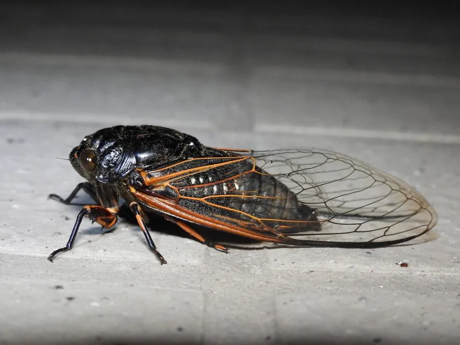

昆虫 · 动物界
黑蚱蝉 Cryptotympana atrata

中国夏季最常见的蝉之一，雄虫鸣声洪亮，若虫在土中生活多年，羽化后留下蝉蜕，蝉蜕可入药，若虫也可食用。
- 分类
- 门节肢动物门纲昆虫纲目半翅目科蝉科属蚱蝉属
- 栖息环境
- 阔叶林、果园、行道树与庭院，若虫生活在树木根际土壤
- 地理分布
- 中国大部分地区，以及日本、朝鲜半岛
- 保护级别
- 暂无评估
物种志
黑蚱蝉成虫体长约 4–4.8 cm，翅展可达约 12 cm，体黑色有光泽，翅透明，翅脉淡褐色，雄虫腹部有发达的发音器。头部有 3 个单眼，复眼突出。若虫体色浅褐，前足发达，适于在土中挖掘。
雌蝉用产卵器刺破嫩枝，把卵产在枝条内，造成枯梢；卵孵化后若虫落到地面钻进土中，吸食树根汁液，在土中生活约 3–5 年。成熟若虫在夏季夜间爬出地面，爬上树干羽化，留下完整的蝉蜕。雄蝉靠腹部发音器鸣叫吸引雌蝉，气温越高叫得越响。黑蚱蝉分布在中国大部分地区以及日本、朝鲜半岛，若虫吸食根系可影响树势，成虫是夏季常见的鸣虫，蝉蜕入中药称蝉衣，若虫也常被捕捉食用。
形态与习性
- 食性成虫、若虫均刺吸植物汁液
- 体长约 4–4.8 cm，翅展可达约 12 cm
- 生活史若虫在土中生活约 3–5 年，夜间爬出羽化
- 鸣叫雄蝉靠腹部发音器鸣叫，用于求偶
- 药用蝉蜕入中药，称蝉衣
- 影响雌蝉产卵刺伤枝条可造成枯梢
趣味知识
- 黑蚱蝉的若虫要在地下生活三到五年才爬出地面羽化。
- 蝉蜕是若虫羽化后留下的外壳，可入中药，称蝉衣。
- 雄蝉鸣叫时腹部鼓膜高速振动，是夏季最响的昆虫之一。